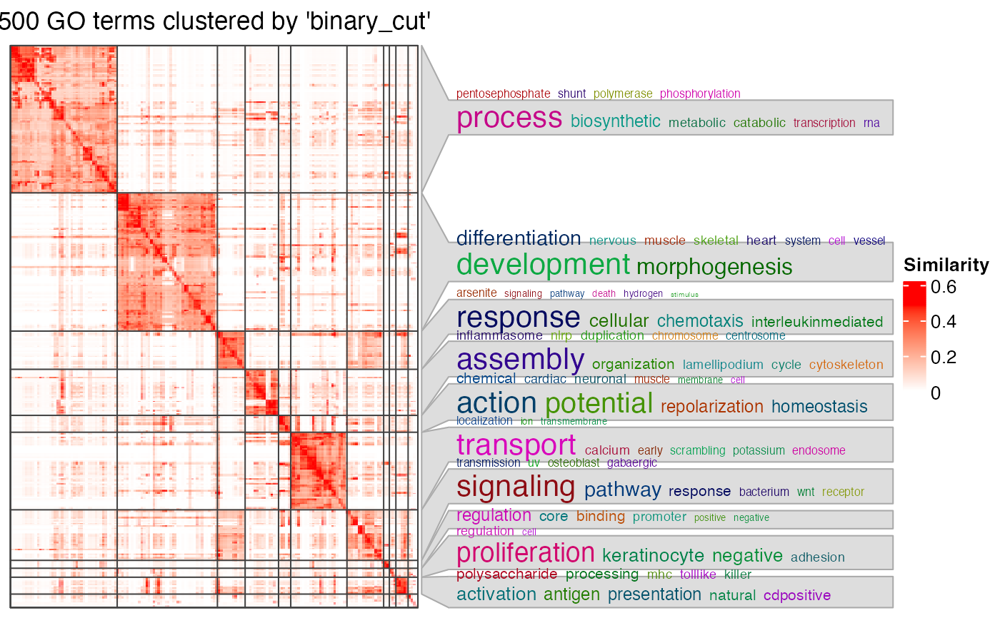

simplifyGO.RdSimplify Gene Ontology (GO) enrichment results
simplifyGO(mat, method = "binary_cut", control = list(),
plot = TRUE, verbose = TRUE,
column_title = qq("@{nrow(mat)} GO terms clustered by '@{method}'"),
ht_list = NULL, ...)A GO similarity matrix.
Method for clustering the matrix. See cluster_terms.
A list of parameters for controlling the clustering method, passed to cluster_terms.
Whether to make the heatmap.
Column title for the heatmap.
Whether to print messages.
A list of additional heatmaps added to the left of the similarity heatmap.
Arguments passed to ht_clusters.
This is basically a wrapper function that it first runs cluster_terms to cluster
GO terms and then runs ht_clusters to visualize the clustering.
The arguments in simplifyGO passed to ht_clusters are:
draw_word_cloudWhether to draw the word clouds.
min_termMinimal number of GO terms in a cluster. All the clusters with size less than min_term are all merged into one single cluster in the heatmap.
order_by_sizeWhether to reorder GO clusters by their sizes. The cluster that is merged from small clusters (size < min_term) is always put to the bottom of the heatmap.
statWhat values of keywords are used to map to font sizes in the word clouds.
exclude_wordsWords that are excluded in the word cloud.
max_wordsMaximal number of words visualized in the word cloud.
word_cloud_grob_paramA list of graphic parameters passed to word_cloud_grob.
fontsize_rangeThe range of the font size. The value should be a numeric vector with length two. The minimal font size is mapped to word frequency value of 1 and the maximal font size is mapped to the maximal word frequency. The font size interlopation is linear.
bg_gpGraphic parameters for controlling the background of word cloud annotations.
A data frame with two columns: GO IDs and cluster labels.
simplifyGOFromMultipleLists which performs simplifyGO analysis with multiple lists of GO IDs.
# \donttest{
set.seed(123)
go_id = random_GO(500)
mat = GO_similarity(go_id)
#> You haven't provided value for `ont`, guess it as `BP`.
df = simplifyGO(mat, word_cloud_grob_param = list(max_width = 80))
#> Cluster 500 terms by 'binary_cut'...
#> 17 clusters, used 1.068247 secs.
#> Perform keywords enrichment for 10 GO lists...

head(df)
#> id cluster
#> 1 GO:0036092 1
#> 2 GO:0021989 2
#> 3 GO:0071329 3
#> 4 GO:1904761 2
#> 5 GO:0098742 4
#> 6 GO:0097698 1
# }